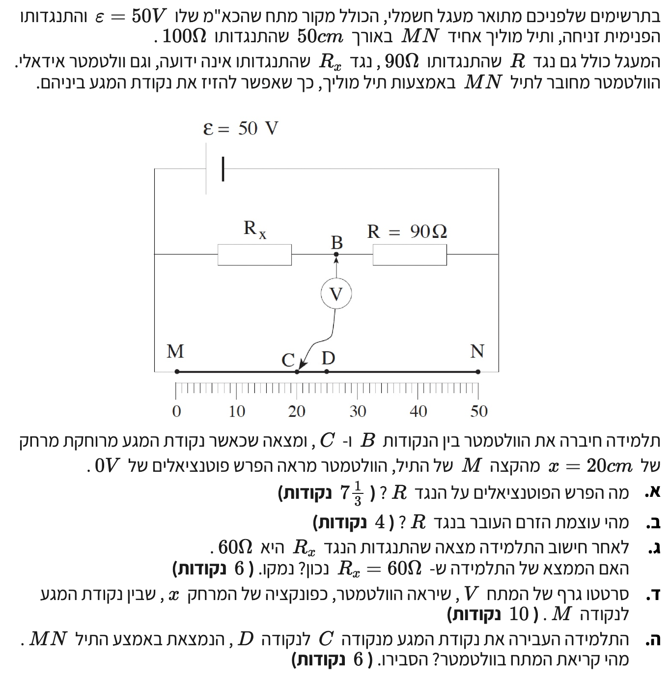

לפני שניגש לסעיפים, בואו נבין את מבנה המעגל החשמלי הנתון לנו. המעגל מורכב ממקור מתח המחובר במקביל לשני ענפים:
הענף העליון: מורכב משני נגדים בטור, הנגד הנעלם \( R_x \) (בין נקודה \( M \) ל-\( B \)) והנגד הידוע \( R \) (בין נקודה \( B \) ל-\( N \)).
הענף התחתון: מורכב מתיל מוליך אחיד \( MN \) המתפקד כנגד אחד ארוך.
הוולטמטר (מד המתח) מחובר בין נקודה \( B \) בענף העליון לנקודה משתנה \( C \) בענף התחתון. כיוון שנאמר שזהו וולטמטר אידיאלי, התנגדותו אינסופית והוא אינו צורך זרם, כלומר הוא משמש אך ורק למדידת הפרש הפוטנציאלים מבלי להשפיע על חלוקת הזרמים במעגל.

[תמונת השאלה המקורית]לא נמצאה תמונה בשם question-image.png באותה תיקייה.
סעיף א'
מה נתון:
כאמור, עלינו לעבוד ביחידות התקניות של מערכת MKS. לכן, נמיר מיד את נתוני האורך מסנטימטרים למטרים:
כא"מ מקור המתח: \( \varepsilon = 50\text{ V} \) והתנגדותו הפנימית זניחה \( r = 0\text{ }\Omega \).
התנגדות הנגד הידוע: \( R = 90\text{ }\Omega \).
התנגדות התיל השלם: \( R_{MN} = 100\text{ }\Omega \).
אורך התיל: \( L = 50\text{ cm} = 0.5\text{ m} \).
נקודת המגע \( C \) מרוחקת מנקודה \( M \) מרחק של: \( x = 20\text{ cm} = 0.2\text{ m} \).
קריאת מד המתח במצב זה היא \( 0\text{ V} \), כלומר הפוטנציאל בנקודה \( B \) שווה לפוטנציאל בנקודה \( C \): \( V_B = V_C \).
מה מחפשים:
את המתח על הנגד \( R \) (הנמצא בין הנקודה \( B \) לנקודה \( N \)), נסמן זאת כ- \( V_{BN} \).
נוסחאות ועקרונות בשימוש: \( V = IR \)חוק אוהם למציאת מתחים וזרמים. \( R = \rho\frac{\ell}{A} \)נוסחת התנגדות תיל. התנגדות של קטע תיל אחיד עומדת ביחס ישר לאורכו. עקרונות:1. מד מתח אידיאלי הוא בעל התנגדות אינסופית, ולכן אינו צורך זרם במעגל. 2. כאשר קריאת מד מתח היא אפס, סימן שהפוטנציאלים בשתי נקודות החיבור שווים (השוואת פוטנציאלים).
הצבה ופתרון:
ראשית, נקבע שרירותית את הפוטנציאל בקצה הימני של המעגל (הצד השלילי של המקור המחובר לנקודה \( N \)) כאפס וולט: \( V_N = 0\text{ V} \). כתוצאה מכך, הפוטנציאל בצד השמאלי של המעגל (נקודה \( M \)) יהיה שווה לכא"מ המקור: \( V_M = 50\text{ V} \).
נחשב את הזרם הכולל הזורם בענף התחתון (התיל \( MN \)):
מכיוון שקריאת הוולטמטר היא \( 0\text{ V} \), ידוע לנו כי הפוטנציאלים שווים, כלומר \( V_B = V_C = 30\text{ V} \).
הנגד \( R \) מחובר בין נקודה \( B \) לבין הצד הימני של המעגל (נקודה \( N \)) שבו הפוטנציאל הוא אפס. לכן, המתח על הנגד \( R \) הוא:
\[ V_{BN} = V_B - V_N = 30 - 0 = 30\text{ V} \]
המתח על הנגד \( R \) הוא \( V_{BN} = 30\text{ V} \).
דרך פתרון חלופית - הבנה אינטואיטיבית:
שימוש בחלוקת מתח יחסית
נציג דרך חלופית וישירה יותר, המבוססת על תכונותיו של מוליך אחיד וללא צורך בחישוב זרמים. נתון כי מקור המתח הוא אידיאלי (התנגדות פנימית זניחה), ולכן מלוא כא"מ המקור, \( 50\text{ V} \), נופל על התיל השלם \( MN \).
מכיוון שהתיל אחיד, מפל המתח לאורכו מתפלג באופן יחסי לאורך. התיל כולו באורך \( 50\text{ cm} \) ונושא מתח של \( 50\text{ V} \), ולכן ניתן לומר כי כל סנטימטר של תיל גורם למפל מתח של \( 1\text{ V} \).
הקטע \( MC \) הוא באורך \( 20\text{ cm} \), ולכן יפול עליו מתח של \( 20\text{ V} \). כדי להשלים לסך המתח בענף התחתון, המתח הנופל על שארית התיל, הקטע \( CN \) (שאורכו \( 30\text{ cm} \)), חייב להיות \( 30\text{ V} \).
אנו יודעים מקריאת מד המתח שהפוטנציאל בנקודה \( B \) שווה לפוטנציאל בנקודה \( C \). מכיוון ששני הענפים מתחברים חזרה באותה נקודה ימנית \( N \) (שבה הפוטנציאל משותף ושווה לאפס), אנו מסיקים שעל הנגד \( R \) (הנמצא בין \( B \) ל-\( N \)) נופל בדיוק אותו מתח שנופל על הקטע \( CN \) (הנמצא בין \( C \) ל-\( N \)). מכאן שהמתח על הנגד \( R \) הוא אכן \( 30\text{ V} \).
טיפ מורה:
כאשר וולטמטר מראה מתח אפס, שתי הנקודות שאליהן הוא מחובר הן בעלות אותו פוטנציאל, ולכן לא היה זורם ביניהן זרם גם אם היינו מחברים אותן בתיל במקום בוולטמטר. מצב זה מזוהה כ"גשר וויטסטון מאוזן" (Wheatstone Bridge). נשתמש בתכונה זו גם בסעיפים הבאים!
סעיף ב'
מה נתון:
מהסעיף הקודם אנו יודעים כי המתח על הנגד \( R \) הוא \( V_{BN} = 30\text{ V} \), ונתון לנו כי התנגדותו היא \( R = 90\text{ }\Omega \).
מה מחפשים:
את עוצמת הזרם החשמלי העובר בנגד \( R \), נסמנו \( I_R \).
נוסחאות ועקרונות בשימוש: \( V = IR \)חוק אוהם המקשר בין מתח, זרם והתנגדות.
עוצמת הזרם העובר בנגד \( R \) היא \( 0.333\text{ A} \) (או בדיוק שליש אמפר).
טיפ מורה:
תמיד כדאי לזכור: מד מתח אידיאלי מהווה "נתק" במעגל ולכן הזרם \( I_R \) שמצאנו כעת הוא למעשה הזרם הקבוע שזורם לאורך כל הענף העליון, כלומר הוא עובר גם דרך הנגד הנעלם \( R_x \).
סעיף ג'
מה נתון:
חישוב של תלמידה מראה כי \( R_x = 60\text{ }\Omega \). אנו יודעים שהזרם בענף העליון הוא \( I_{\text{upper}} = \frac{1}{3}\text{ A} \), והמתח הכולל על הענף העליון זהה למתח המקור \( \varepsilon = 50\text{ V} \).
מה מחפשים:
לבדוק האם הממצא של התלמידה נכון ולנמק את תשובתנו.
נוסחאות ועקרונות בשימוש: \( V = IR \)חוק אוהם. עקרונות:1. כאשר מד המתח מראה אפס, הפוטנציאלים בשתי נקודות החיבור שווים (\( V_B = V_C \)). מכאן נובע שהמתח על \( R_x \) (הנמצא בין \( M \) ל-\( B \)) שווה למתח על הקטע \( MC \) (הנמצא בין \( M \) ל-\( C \)). 2. בחיבור טורי (כאשר אין צומת המפצל זרם), אותו זרם בדיוק זורם דרך כל הרכיבים בענף.
הצבה ופתרון:
מכיוון שהנגדים מחוברים בטור, הזרם דרך \( R_x \) שווה לזרם שעובר דרך \( R \):
\[ I_{Rx} = I_R = \frac{1}{3}\text{ A} \]
הוולטמטר מראה \( 0\text{ V} \), כלומר \( V_B = V_C \). מכיוון ששני הרכיבים (\( R_x \) ו-\( MC \)) מחוברים לאותה נקודה התחלתית \( M \), מפל המתח עליהם בהכרח זהה. בסעיף א' מצאנו כי מתח זה הוא \( 20\text{ V} \), ולכן:
\[ V_{MB} = V_{MC} = 20\text{ V} \]
כעת, נוכל למצוא את ההתנגדות \( R_x \) בעזרת חוק אוהם בלבד:
הממצא של התלמידה אכן נכון! ההתנגדות של \( R_x \) היא \( 60\text{ }\Omega \).
טיפ מורה:
בפיזיקה, שיפוע גרף המתח כפונקציה של המיקום מייצג פיזיקלית את עוצמת השדה החשמלי שבתוך המוליך! הקשר \( E = \frac{V_{AB}}{d} \) מראה ששדה חשמלי אחיד גורם לירידה ליניארית בפוטנציאל.
סעיף ד'
מה נתון:
נקודת המגע \( C \) נעה לאורך התיל \( MN \) וכך המרחק \( x \) משתנה בין \( 0\text{ cm} \) ל- \( 50\text{ cm} \). קריאת מד המתח מציגה את ההפרש הפוטנציאלי בין \( B \) ל- \( C \). הפוטנציאל בנקודה \( B \) קבוע ושווה ל- \( V_B = 30\text{ V} \) (ביחס לנקודה \( N \) שהוגדרה כ- \( 0\text{ V} \)).
מה מחפשים:
לשרטט גרף של קריאת הוולטמטר \( V \) כפונקציה של המרחק \( x \) (מנקודה \( M \)).
נוסחאות ועקרונות בשימוש: \( V_{AB} = V_A - V_B \)מתח חשמלי מוגדר כהפרש פוטנציאלים בין שתי נקודות. עקרון:מכיוון שמדובר בתיל מוליך אחיד, ההתנגדות – ולכן גם מפל המתח עליו – עומדת ביחס ישר לאורכו. הפוטנציאל יורד בקצב קבוע לאורך התיל.
הצבה ופתרון:
נבנה פונקציה עבור הפוטנציאל בנקודה \( C \). כפי שהסקנו קודם בהבנה האינטואיטיבית, על כל התיל (שאורכו \( 50\text{ cm} \)) נופל מתח של \( 50\text{ V} \), ולכן מפל המתח הוא בדיוק \( 1\text{ V} \) לכל סנטימטר.
הפוטנציאל ההתחלתי בנקודה \( M \) הוא \( 50\text{ V} \). ככל שאנו מתרחקים ממנה ימינה מרחק \( x \) (בסנטימטרים), הפוטנציאל יורד ב-\( x \) וולט. לכן, הפוטנציאל בנקודה \( C \) כפונקציה של \( x \) הוא:
קיבלנו פונקציה ליניארית עם שיפוע חיובי (\( m = 1 \)). נבדוק שלוש נקודות משמעותיות לשרטוט:
עבור \( x = 0\text{ cm} \) (נקודה M): נקבל \( V = 0 - 20 = -20\text{ V} \).
עבור \( x = 20\text{ cm} \): נקבל \( V = 20 - 20 = 0\text{ V} \) (התאמה לנתון המקורי של גשר מאוזן).
עבור \( x = 50\text{ cm} \) (נקודה N): נקבל \( V = 50 - 20 = 30\text{ V} \).
הערה: ניתן היה לחבר את הוולטמטר בקוטביות הפוכה ולצייר את הגרף כ- \( V(x) = 20 - x \). שתי הגישות נכונות כל עוד צורת הגרף ליניארית (קו ישר).
טיפ מורה:
שימו לב כמה הפונקציה אלגנטית: השיפוע הוא בדיוק 1. כלומר, על כל הזזה של סנטימטר אחד של נקודת המגע על התיל, קריאת מד-המתח משתנה בדיוק בוולט אחד! הליניאריות של הגרף היא תוצאה ישירה של אחידות התיל, ולכן ניתן לצפות שכל תיל אחיד ייצר תלות ליניארית פשוטה (קו ישר) של הפוטנציאל לאורכו.
סעיף ה'
מה נתון:
התלמידה מעבירה את המגע לנקודה \( D \) הנמצאת בדיוק באמצע התיל \( MN \). המשמעות היא שמרחק נקודת המגע החדשה הוא \( x = 25\text{ cm} \).
מה מחפשים:
את קריאת הוולטמטר בנקודה החדשה, כלומר את גודל הפרש הפוטנציאלים בין \( B \) ל- \( D \), נסמן \( |V_B - V_D| \).
נוסחאות ועקרונות בשימוש: \( V_{AB} = V_A - V_B \)מתח חשמלי הוא הפרש פוטנציאלים. עקרון:עקרון פריסת המתח לאורך תיל: על מחצית מאורכו של תיל אחיד ייפול בדיוק מחצית מהמתח הכולל שנופל עליו.
לחלופין, נחשב באופן פרטני: הפוטנציאל באמצע התיל הוא חצי מכא"מ המקור (כיוון שההתנגדות מתחלקת שווה בשווה 50 אום מכל צד), לכן \( V_D = 25\text{ V} \). הפוטנציאל בנקודה \( B \) נשאר ללא שינוי \( V_B = 30\text{ V} \). קריאת מד המתח (הפרש הפוטנציאלים) היא:
\[ V_{BD} = V_B - V_D = 30 - 25 = 5\text{ V} \]
קריאת הוולטמטר תהיה \( 5\text{ V} \).
טיפ מורה:
זה יופי של בדיקה עצמית - הוולטמטר האידיאלי אינו משנה את הפוטנציאלים בענפים השונים של המעגל. אנו יכולים לחשב את \( V_B \) בלעדיו ולחשב את \( V_D \) בלעדיו, והפרשם יהיה מה שיוצג בצג!
נוסח השאלה המקורית
[תמונת השאלה המקורית]לא נמצאה תמונה בשם question-image.png.